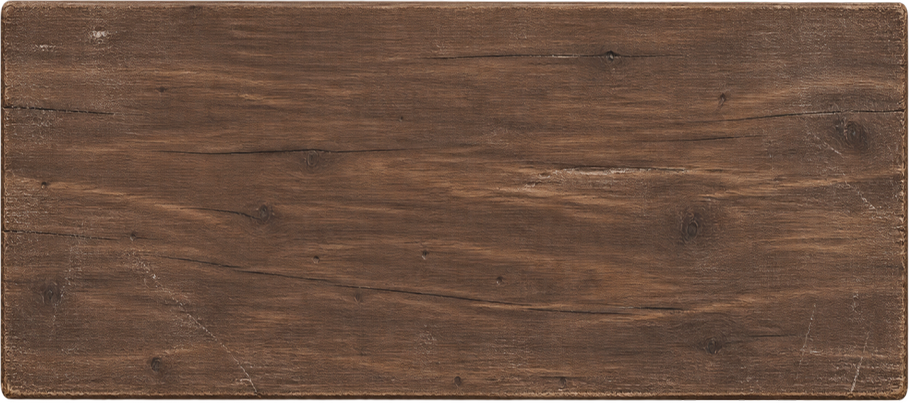
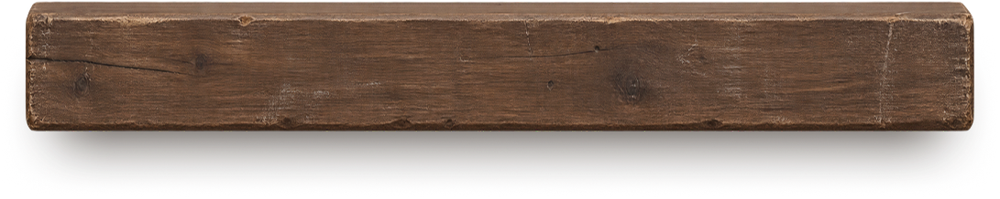
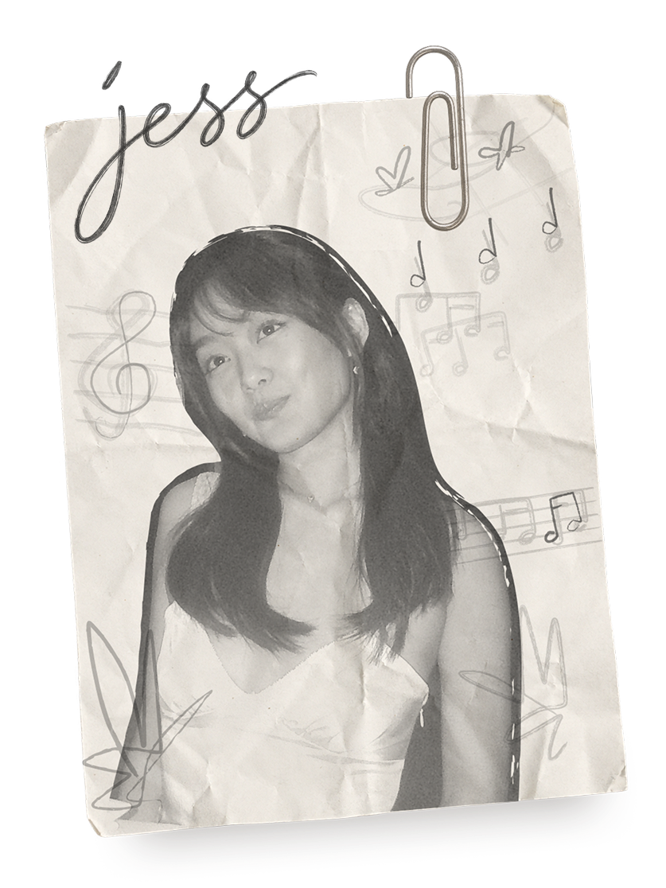

HARDWARE UX
Designing feature experiences for Bose
Hands-free interactions, user-customizable controls, and audio sharing
- journey mapping
- product behaviors
- multimodal feedback
- ux specifications
I enjoy designing experiences that help everyday moments feel a little more special.
Currently @Bose
Previously @Disney
A few records from the archive


HARDWARE UX
Hands-free interactions, user-customizable controls, and audio sharing

DESIGN SYSTEMS
Modular components and standards for internal event communications

UX EXPLORATION
A concept for supporting cultural immersion through music

VISUAL DESIGN
Core visuals for out-of-home and experiential brand activations

This space is an expression of a few things I love most: music, art, and design.
I've organized my work into a collection of records. Each one holds a different project from my time at Bose and Disney, along with personal explorations.
At the heart of my work is the belief that design should be worth feeling and experiencing. As a designer, I want to create things that are useful, but also add something meaningful to how people experience the world around them.
Outside of work, I love picking up new crafts (currently pottery), vintage shopping, and exploring the east coast!